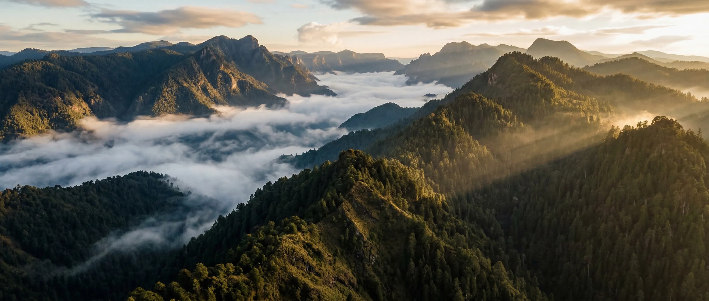
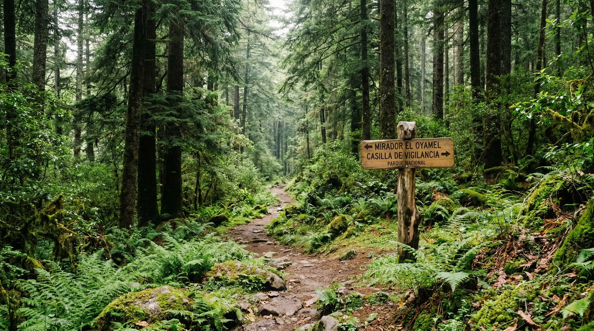
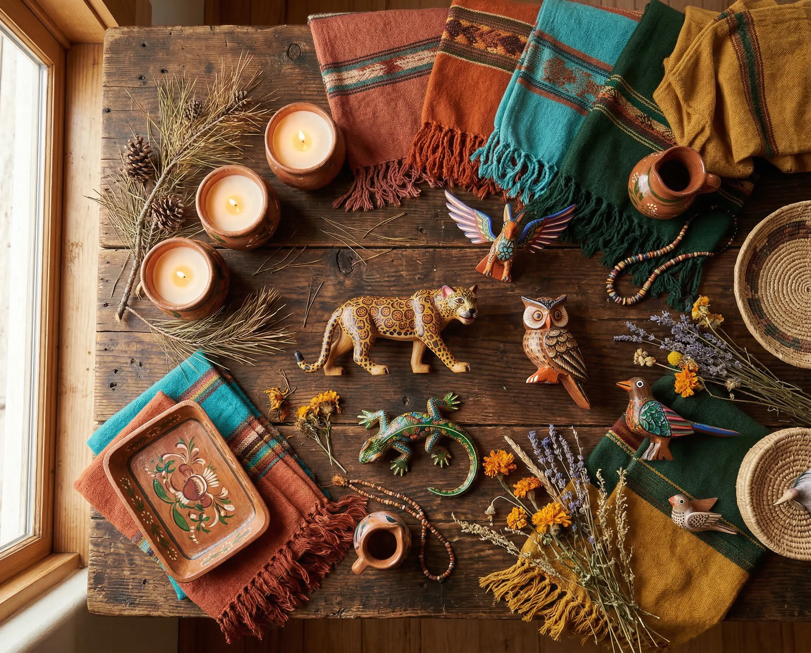
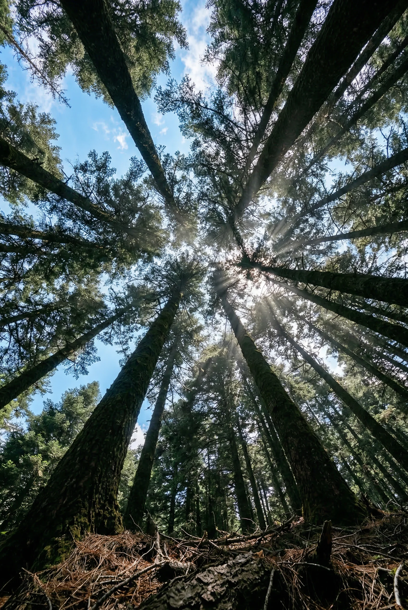

Trail Running
Corre entre pinos y encinos en senderos de montaña con desniveles que retan al cuerpo y alimentan el alma. Rutas de 5K a 15K para todos los niveles.

Bosque comunitario • Álvaro Obregón, CDMX
Santa Rosa Xochiac — donde la comunidad protege el bosque, y el bosque transforma a quienes lo visitan.
Descubrir
La Comunidad
En la Sierra de las Cruces, al poniente de la Ciudad de México, la comunidad de Santa Rosa Xochiac protege uno de los últimos bosques vivos de la capital. «Xochiac» viene del náhuatl — xochitl (flor) — y significa «lugar donde florecen las flores». Como pueblo originario con raíces prehispánicas nahuas, la comunidad ha cuidado estas tierras por generaciones a través de la figura de bienes comunales: propiedad colectiva ancestral protegida por la Constitución mexicana.
Más de 2,400 hectáreas de bosque de oyamel, pino y encino se extienden entre los 2,700 y 3,100 metros de altitud — el pulmón verde de una megalópolis de 22 millones de personas. A solo 30 minutos de Santa Fe, las familias que habitan estas montañas trabajan juntas para reforestar, conservar y compartir su cultura, gastronomía y tradiciones con quienes buscan algo auténtico.

«El bosque no es nuestro — nosotros somos del bosque.»
Qué Encontrarás
Actividades guiadas por la comunidad local, diseñadas para conectar con la naturaleza y la cultura de Santa Rosa.
Corre entre pinos y encinos en senderos de montaña con desniveles que retan al cuerpo y alimentan el alma. Rutas de 5K a 15K para todos los niveles.

Camina por senderos interpretativos con guías locales que conocen cada planta, cada ave y cada historia del bosque. Desde caminatas suaves hasta rutas de alta montaña.

Recorre las rutas ARCAC que conectan a la comunidad con su historia. Desde Calaveras hasta Cruz de Coloxtitla, cada paraje tiene nombre y significado. Parte del programa de Áreas de Recursos Comunitarios para la Conservación de la CDMX.

Prueba la cocina serrana preparada con ingredientes del bosque: hongos silvestres, quelites, tlacoyos, barbacoa y mermeladas de tejocote y capulín. Cada platillo es una tradición viva de la comunidad.

Visita el vivero comunitario y participa en jornadas de plantación. Oyameles, pinos y encinos nativos se propagan aquí para restaurar el bosque. Adopta un árbol y recibe su ubicación GPS.

Aprende técnicas artesanales de manos de los creadores locales. Tallado en madera, velas aromáticas con ingredientes del bosque y más — llévate algo hecho por ti.
Impacto Real
Galería



Explora
Senderos y brechas de la Comunidad de Santa Rosa Xochiac. Activa o desactiva cada ruta para explorar los recorridos.
Segmentos:
IDA CIAF REGRESOCómo Llegar
Santa Rosa Xochiac se encuentra en las montañas de la alcaldía Álvaro Obregón, al poniente de la Ciudad de México. A pesar de sentirse como otro mundo, está sorprendentemente cerca del corazón de la ciudad.
~30 minutos en auto por carretera
~50 minutos en auto
~40 minutos en auto
Preguntas Frecuentes
Santa Rosa Xochiac es un pueblo originario ubicado en la Sierra de las Cruces, Alcaldía Álvaro Obregón, al poniente de la Ciudad de México. El bosque comunal se extiende entre los 2,700 y 3,100 metros sobre el nivel del mar, con más de 2,400 hectáreas de bosque de oyamel, pino y encino. Se encuentra a solo 30 minutos de Santa Fe y 50 minutos del Centro Histórico.
Hay actividades para todos los niveles. Los senderos van desde caminatas suaves de 2 horas hasta rutas avanzadas de 4+ horas con terreno técnico. Los guías locales adaptan el ritmo al grupo.
Calzado cómodo para caminar (idealmente botas de hiking), ropa en capas, gorra, protector solar, mochila pequeña y cámara. Nosotros proporcionamos agua y snacks según la actividad.
Recibes un certificado digital con las coordenadas GPS de tu árbol, puedes darle nombre y te enviamos actualizaciones semestrales con fotos de su crecimiento. Los árboles son especies nativas plantadas en zonas de reforestación prioritarias.
Todas las actividades son guiadas por miembros de la comunidad que conocen el bosque a profundidad. Contamos con botiquín de primeros auxilios y los senderos están señalizados. La comunidad cuida de sus visitantes como cuida del bosque.
Sí. Ofrecemos experiencias personalizadas para team building empresarial, celebraciones, retiros de bienestar y grupos escolares.